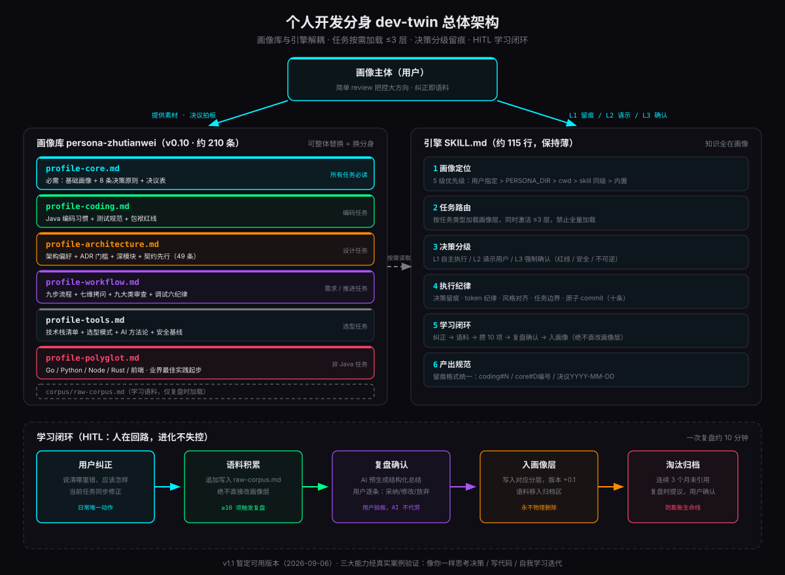
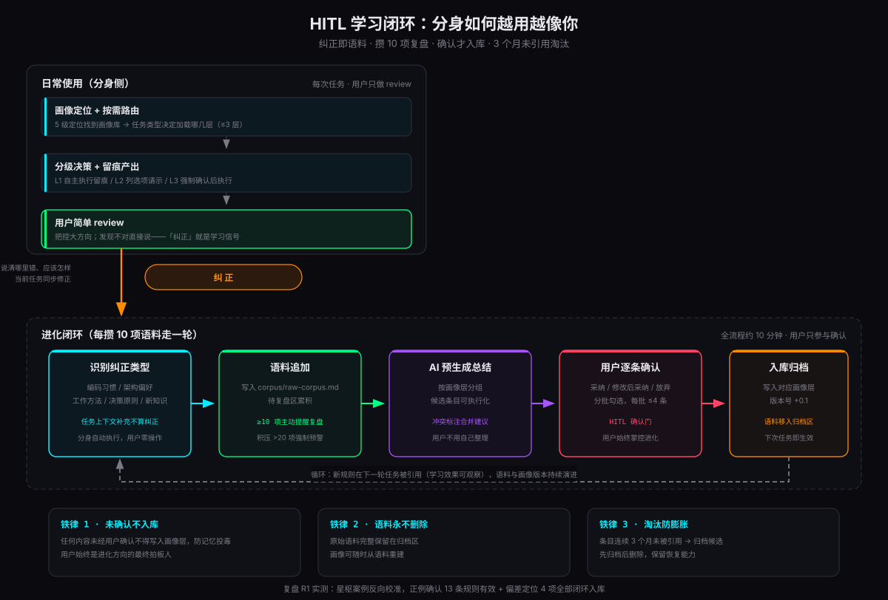
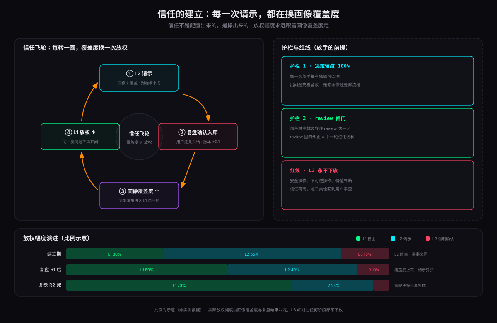

过去一年，我把越来越多的开发工作交给了 AI。模型能力早就不是瓶颈——真正让我别扭的是另一件事：AI 写的代码能用，但不是「我」的代码。命名不是我的习惯，异常处理不是我的路数，架构决策更不会替我想「这个中间件到底要不要加」。
我之前的方案是一个叫 dev-lifecycle 的技能：把七阶段开发流程编排成提示词。它验证了可行性，也暴露了三个顽固问题——生成的代码冗余、token 消耗大、工程一大就跑偏。于是我做了一个更彻底的尝试：不教 AI「怎么开发」，而是把「我」本人提炼成一个可加载、可进化、可替换的画像库，再配一个按画像执行的薄引擎，让它成为我的开发分身。
这篇文章完整复盘这个叫 dev-twin 的项目：从战略分析到画像提炼，从引擎设计到实战验证，再到让它自我进化的学习闭环。全部过程两天天走完，当前版本 v1.1 已经在真实项目上跑通三大能力：像你一样思考决策、像你一样写代码、自我学习迭代。
- 分身 = 外挂画像库（决策原则 / 编码习惯 / 架构偏好 / 工作方法）+ 约 115 行的薄引擎——知识全在画像，引擎只做路由、决策分级、留痕等六件事；
- 信任分级：L1 自主执行、L2 列选项请示、L3 强制确认；安全、不可逆、价值判断三类红线永不下放；
- 学习闭环：纠正即语料 → 攒 10 项复盘 → 确认才入库 → 3 个月未引用淘汰，一轮约 10 分钟；
- 复刻路径：五层对话定战略 → 画像提炼 → 薄引擎 → 三层验证 → 复盘闭环，三个技能均已开源。
一、先想清楚：要解决什么问题
动手前先回答「为什么」。当时把痛点逐一拆开，每一条都指向明确的根因：
| 痛点 | 根因 | 解法 |
|---|---|---|
| AI 写的代码冗余、读不懂、难维护 | AI 按通用习惯工作，不按「我」的习惯 | 画像库 + 分身引擎，风格对齐 |
| 老技能费 token、工程大了跑偏 | 全量画像塞 prompt，无按需加载机制 | 分层画像 + 任务路由按需加载（≤3 层） |
| AI 无法按我的思维方式做需求和架构决策 | 决策原则从未被显式结构化 | 决策原则画像层 + 决策分级（L1/L2/L3） |
| 经验无法沉淀，每次纠正都白白流失 | 无学习机制 | HITL 学习闭环：纠正→语料→复盘→入画像 |
同时定下不可妥协的验收铁律：可读可维护、性能可扩展鲁棒、决策 100% 可追溯、自我学习迭代、token 可控——缺一不可。最终目标是达到 80% 画像覆盖度，产出我只需简单 review 即为生产级。
二、先战略后建设：一场五层对话
面对「我想要个分身」这种模糊诉求，最危险的动作是直接开写。我用战略顾问技能做了一场五层深度对话——现状、本质、目标、路径、风险，一层层往下剥：
这场对话产出两份文档：一份战略调研报告、一份四阶段十周的行动计划（9 项行动，每项带验证标准）。后续建设的每一步都能回溯到这两份文档——这是整个项目最重要的方法论。
三、画像提炼：把「我」拆成可加载的结构
画像的质量决定分身的一切。素材按代表性排序：个人开发经验 > 简历 > 工程代码（git author 过滤本人提交）> 开发流程文档。提炼流程四步：
- AI 通读全部素材，逐条提炼候选画像条目；
- 每条标注三类：
✅ 个人风格/🏆 最佳实践/⚠️ 疑似历史包袱； - 疑似项与我逐条讨论定夺——是包袱红线还是个人特色；
- 我的决议直接写入 core 决议表：「理想中的我」覆盖历史惯性。
第二步的三类标注是防「提炼失真」的关键：AI 从 10 万行代码里提炼习惯，最容易犯的错是把项目的历史包袱当成个人最佳实践学进去。让人来当最后一道过滤器，是最准的方案。
更大的结构性决策是分层——这是根治「费 token、跑偏」的根基。画像不塞进提示词全量加载，而是按角色切层，任务触发哪类才加载哪层：
| 层 | 内容 | 加载时机 |
|---|---|---|
| core | 基础画像 + 8 条决策原则 + 决议表 | 所有任务必读 |
| coding | Java 编码习惯 + 包袱红线 | 编码任务 |
| architecture | 架构偏好 + ADR 门槛 + 深模块原则 + 原型思维 | 设计任务 |
| workflow | 九步流程 + 九大类审查 + 调试纪律 | 推进 / 审查任务 |
| tools | 技术栈 + 选型模式 + AI 方法论 + 安全基线 | 选型任务 |
| polyglot | 非 Java 语言业界最佳实践 | 多语言任务 |
| corpus | 原始语料库 | 仅复盘时 |
举一个 core 层决策原则的例子，这是整个分身的「判断标准」，优先级从上到下：
每条都能在后续产出里被引用、被检验。分身执行时决策留痕会标注「依据 D2」——决策可追溯，画像才有进化的事实基础。
四、薄引擎：只做六件事，知识全在画像
引擎刻意保持薄——整个 SKILL.md 约 115 行，只做六件事：
- 画像定位（5 级优先级）：用户指定 > 环境变量 > 当前目录 > skill 同级 > 内置默认。外部覆盖内置，换画像目录就换分身。
- 任务路由：按任务类型加载画像层，同时激活 ≤3 层，禁止全量加载。
- 决策分级：画像覆盖到的自主执行，覆盖不到的请示，碰红线的强制确认。
- 执行纪律：决策留痕、token 纪律、风格对齐、任务边界、原子 commit 等十条。
- 学习闭环：纠正识别 → 写语料 → 攒 10 项 → 复盘确认 → 入画像。
- 产出规范：留痕格式统一（
coding#N / core#D编号 / 决议YYYY-MM-DD）。
其中决策分级是分身的核心行为，也是「自主」与「失控」之间的护栏：
| 级别 | 条件 | 行为 |
|---|---|---|
| L1 自主执行 | 画像明确覆盖（决议 / 原则 / 条目） | 直接执行，产出物留痕 |
| L2 请示决策 | 画像未覆盖、原则冲突、影响面不明 | 列选项 + 给推荐 + 说明理由，用户定夺后执行 |
| L3 强制确认 | 架构红线、安全相关、不可逆操作 | 明确警示风险，必须确认后才执行 |
五、实战验证：从冒烟到星枢
分身不能自证可用，必须拿真实任务说话。验证分三波：
第一波：冒烟验证。选了银行流水 CSV 汇总这类真实小工具跑端到端：画像定位、路由、风格对齐、九步流程全部通过，单任务产出 12 项 L1 决策留痕。更重要的是第一次纠正当场触发学习闭环——我发现 CSV 不能全量加载，要求从实现上流式读取而不是靠提示规避，分身随即写入语料 #1 并同步修复代码。第二个纠正（error 级日志必须带异常堆栈）我没有让它立即入画像，而是留在语料等复盘——闭环纪律优先于效率，已确认的习惯也走批量入库，保持流程一致性。
第二波：思维分身。这是最难的一关——需求分析和架构设计。用一个中等偏上高并发的物联网平台设计任务做全流程试跑，产出《技术设计说明书》从 V0.1 迭代到 V1.0：
- 拷问式对齐 4 项前沿决策：遥测 1.7 万条/秒的设计点、K8s 部署底线、行级租户隔离、工期口径；
- 架构设计 D-01~D-13 结论前置，含容量估算链（峰值 ×5、70% 水位红线）与 E0-E15 曳光弹拆分；
- 三轮用户驱动演进：LangGraph 选型（human-in-the-loop 中断是硬需求的原生实现）、Go 接入内核详设（单连接内存 ≤1.5KB 预算、三层背压）、三语言跨度归并评估；
- 最有说服力的一幕：上一轮试跑写入 core 的决议「新项目默认 PostgreSQL」，这次直接命中 D-10——决议被复用，而不是重新问一遍。
第三波：案例反向校准。任务结束后主动复盘，用案例的实际行为反向核对画像规则：13 条规则确认有效兑现，同时暴露 4 项偏差（假设主动确认时机、文档机械自查、ADR 备选空间广度、Go 窄内核纪律），全部定位根因、经我确认后入库。画像库从 v0.6 升到 v0.10。
六、学习闭环：让分身越用越像你

自我进化是这个项目里最容易被做坏的部分——直接让纠正自动写入画像，等于给记忆投毒开了门。我的设计是人在回路（HITL）：分身进化与否、进化成什么样，决定权始终在我手里。
完整闭环五步：用户纠正（说清哪里错、应该怎样，当前任务同步修正）→ 语料积累（追加写入 raw-corpus.md，绝不直接改画像层，攒满 10 项主动提醒复盘）→ 复盘确认（AI 预生成结构化总结，我逐条「采纳 / 修改后采纳 / 放弃」）→ 入画像层（版本号 +0.1，语料移入归档区）→ 淘汰归档（条目连续 3 个月未被引用，复盘时提议归档）。
复盘的判断标准也很严格——用户明确否定分身做法、给出不同做法、补充画像未覆盖的新知识，才算纠正；补充任务上下文（需求细节、环境信息）不算纠正，不记录。否则语料库很快会被噪声淹没。
- 未经确认，任何内容不写入画像层——防错误经验污染、防记忆投毒
- 原始语料永不删除——画像可以随时从语料重建
- 决策 100% 留痕——出问题可定位是画像错还是执行错
目前语料库 2/10 待复盘，复盘 R1 已经完整走通一轮（13 条正例确认 + 4 项偏差入库 + 归档）。一次复盘的实际成本约 10 分钟——因为 AI 预生成总结，我只做勾选，这个纪律才能坚持下去。
七、人机协作：人定方向，分身跑全程
分身上岗之后，我和它的关系不再是「我写 prompt、它补全」，而是一套稳定分工：怎么做交给它，做什么、值不值得由我决定。落到一次真实任务里，我实际只做三件事——开头一句话说清需求，中途对 L2 请示点一个选项，结束把产出 review 一遍。剩下的时间，分身在自己跑。
把这套分工摊开，边界其实很清楚：
| 交给分身 | 留给我 |
|---|---|
| 怎么实现：技术选型、结构组织、命名、边界处理 | 做什么：需求取舍、优先级排序 |
| 画像覆盖内的全部执行细节（L1 自主执行） | L2 请示的定夺、L3 红线的点头 |
| 决策留痕、自查、语料记录 | 产出 review 与纠正 |
这里有个容易被忽视的细节：信任不是配置出来的，是挣出来的。项目早期，L2 请示非常密集——画像还没覆盖到的地方，它一律来问，我也一度嫌烦；但每次请示换来的都是一条画像规则。几轮复盘入库之后，L1 的比例肉眼可见地上升：星枢试跑里 13 条规则直接兑现，「新项目默认 PostgreSQL」这条决议被直接命中而不是重新问一遍——这些在留痕里都能查到。决策可追溯，我才敢放手；放手的幅度，永远跟着画像覆盖度走。

反向的失败模式我也设想过两种。一种是过度干预：事事亲自过一遍，分身退化成高级代码补全，建分身的意义归零；另一种是过度信任：产出不看直接用，L1 决策错了没人发现，错误经验还会顺着学习闭环混进画像。review 不是流程负担，而是这套协作里唯一的质量闸门——何况它同时是学习信号：我在 review 里说的每一句「不对」，都会变成分身的下一条规则。
所以这套协作的最终形态是：我做判断，它做执行，执行过程 100% 留痕。判断是我不可替代的部分，执行是我最不该亲自消耗时间的部分，而留痕让这两者之间随时可以互相审计——出了问题，看一眼依据标注就知道该修画像还是修流程。把时间花在只有人能花的地方，这才是分身真正的收益。
八、八个关键设计决策
回头看，这些决策决定了项目走向，每一条都有明确的「为什么」：
| 决策 | 备选方案 | 选择理由 |
|---|---|---|
| 画像分层 + 按需加载（≤3 层） | 全量画像塞 prompt | 根治费 token + 跑偏 |
| HITL 确认门（语料攒 10 项 → 复盘 → 入库） | 纠正自动写入画像 | 防画像污染，用户始终掌控进化 |
| 决议表 > 决策原则 > 分层条目 | 无优先级 | 「理想中的我」覆盖历史包袱，冲突有仲裁 |
| 引擎薄、知识全在画像 | 引擎内置规范 | 画像可替换 = 产品化根基 |
| 非 Java 走业界最佳实践 | 等各语言代码样本校准 | 立即可用，学习闭环负责逐步个人化 |
| 决策留痕三种引用格式 | 自由描述 | 出问题可定位画像错还是执行错 |
| 疑似历史包袱与用户逐条定夺 | AI 自行判断 | 提炼失真是最高风险，人是最准的过滤器 |
| 内置默认 + 5 级外部覆盖 | 纯外挂 / 纯内置 | 自包含分发与解耦可替换兼得 |
同样重要的是不引入清单：两轮外部蒸馏时明确拒绝了 TDD 红绿循环（与精简哲学互斥）、wayfinder 重型机制、多技能生态模式——最后这个正是 dev-lifecycle 走过的弯路。知道不做什么，和知道做什么一样重要。
九、你也想造一个：复刻七步
整个 dev-twin 是自包含的，画像目录可整体替换。如果你也想给自己造一个分身，路径已经验证过：
persona-你的名字/（多级定位自动覆盖，引擎零改动）。十、踩过的坑
整个建设过程最大的收获，反而是这些踩坑记录：
- 先战略后建设——五层对话把模糊想法逼成可验收计划，避免直接开写导致返工；
- 引擎与知识分离是产品化根基——画像可替换的设计从第一天就定下，后面自包含分发水到渠成；
- 三层验证缺一不可——产出代码、决策留痕、学习闭环要同时验证，只测产出不算过；
- 用户纠正是最珍贵的信号——第一次纠正就是学习闭环的首跑素材，连引擎自己也被纠正过（目录定位从 Glob 改成 shell）；
- 闭环纪律优先于效率——已确认的习惯仍留语料等复盘批量入库，保持流程一致性；
- 案例是最好的校准器——画像的缺口只有真实案例才暴露，一次复盘同时拿到 13 条正例确认和 4 项偏差入库。
至于下一步：画像覆盖度朝 80% 爬坡、Go 窄内核纪律等待二次验证、语料持续积累触发复盘 R2；再往后是产品化验证——用第二个人的素材跑一遍提炼流程，验证画像可替换和数据隔离。
回到开头的问题：AI 时代，个人经验是最容易被低估的资产。模型人人都能用，但「你为什么这样决策」二十年积累下来的判断力，不会自动长到任何模型里——除非你亲手把它结构化。分身不是把工作丢给 AI，而是把「你」放大：你的决策原则变成可引用的条目，你的纠正变成它的进化，你的经验以 token 为单位开始复利。
我的分身已经上岗了。你的呢？
常见问题
没有大量历史项目素材，也能构建 AI 分身吗？
能。画像提炼的核心不是素材量，而是「拷问式对齐」：用五层深度对话把决策原则显式化，再从少量真实代码中做三类标注与双重校准。缺的部分交给学习闭环，用日常使用中的纠正逐步补齐。
全量画像塞进 prompt，会不会撑爆上下文？
不会。画像分层存储，引擎按任务类型路由，单次任务最多加载三层；引擎本身只有约 115 行的薄设计，知识全部外挂在画像库，token 可控是验收铁律之一。
为什么画像库做成外挂目录，而不是写死在引擎里？
为了可替换与产品化：替换画像目录即可切换分身主体，引擎保持通用；后续用第二个人的素材验证提炼流程时，也天然实现数据隔离。
一轮学习闭环要花多少时间？坚持不下来怎么办？
约 10 分钟。AI 按画像层预生成候选总结并标注冲突，用户只做逐条确认（采纳、修改后采纳、放弃），每批不超过 4 条；语料攒满 10 项主动提醒，超过 20 项强制预警。
哪些操作永远不能交给分身？
三类：安全相关操作、不可逆操作（删数据、强推、重置历史）、以及「值不值得做」的价值判断。前两类是 L3 强制确认的硬红线，价值判断属于人的主体性，任何信任水平下都不下放。
参考资料
- Anthropic · Agent Skills（Skill 机制的官方说明） docs.anthropic.com/en/docs/agents-and-tools/agent-skills
- GitHub · anthropics/skills（官方技能仓库，工程范式参考） github.com/anthropics/skills
- GitHub · mattpocock/skills（外部蒸馏来源，拷问式对齐等实践出处） github.com/mattpocock/skills
- GitHub · affaan-m/ECC（外部蒸馏来源，Agent 安全基线出处） github.com/affaan-m/ECC